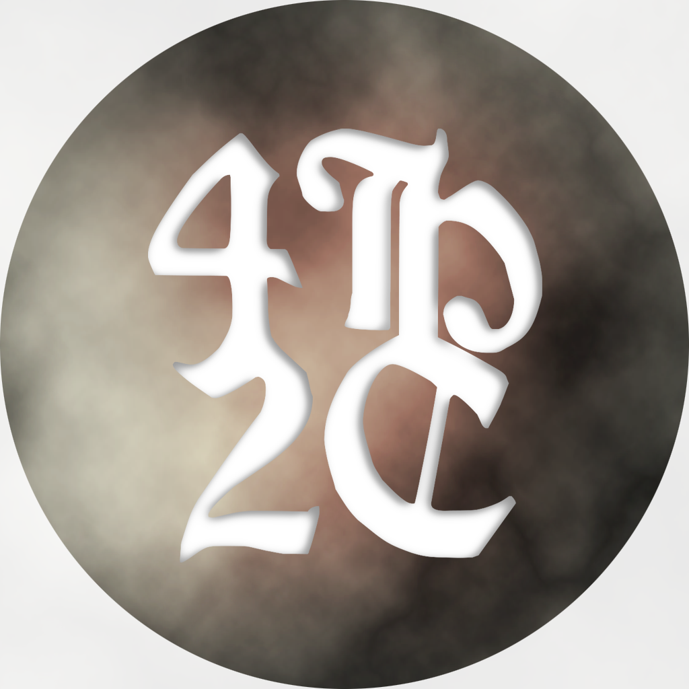

Welcome to 4Hands2Cats Docs
Choose a documentation set:

Choose a documentation set:
At 4Hands2Cats, we create debugging tools to streamline development. As two devs (and two cats), we focus on robust, user-friendly solutions for Unity. Our first asset, a complete debug toolkit, works in build and runtime for full control. We're committed to improving and expanding our tools.
Have questions, feedback, or collaboration ideas? Drop us a message below: